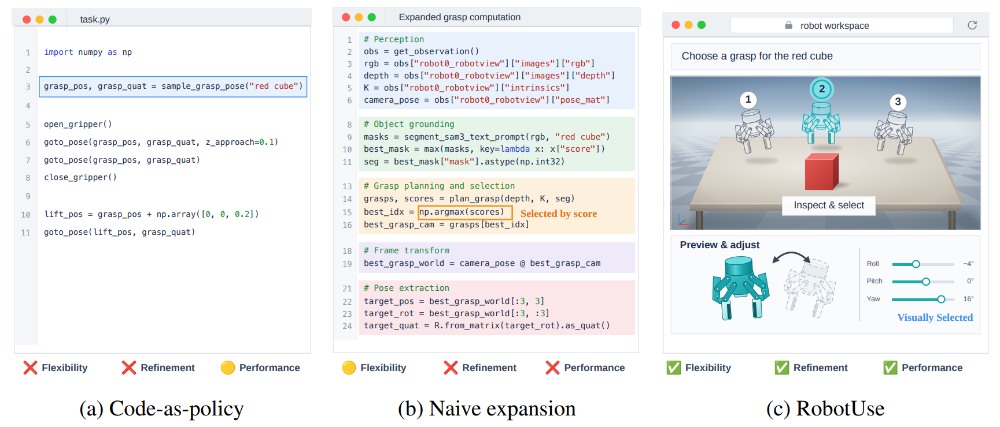
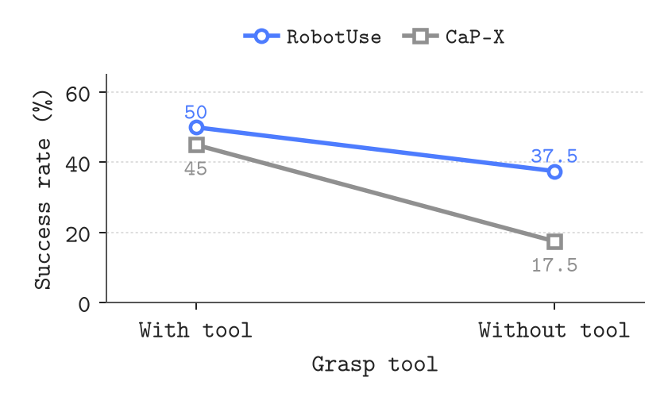
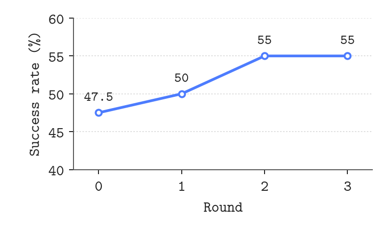

RobotUse: Allocating Computation, Context, and Decisions

Abstract
Robot agents must connect their intended actions to observed outcomes while retaining the context needed to revise their choices over repeated attempts. Existing interfaces often leave these choices inside predefined tools or require agents to manage detailed execution code and its growing history. We introduce RobotUse, a robot agent harness that organizes computation, context, and decisions around specifying and revising physical actions. Agents visually select targets and poses, while the backend handles geometry, motion planning, and control. Subagents retain detailed interactions within each subgoal and return the information needed for subsequent decisions. Continual harnessing lets agents learn from execution by updating a persistent playbook. On RoboLab, RobotUse achieves 45% task success, outperforming CaP-X by 6.7 percentage points while maintaining compact decision contexts and reducing reliance on predefined action abstractions. Furthermore, we show that RobotUse learns from real-world execution despite imperfect feedback and transfers what it learns to subsequent tasks.
Baseline comparison
16 seed-0 tasks where RobotUse succeeds and at least one baseline fails.
ORS = Open Robot Skills. ← / → changes tasks. Click videos to pause or play.
Removing the grasp tool
Selected seed-1 tasks where RobotUse succeeds with and without grasp tools, while CaP-X changes from success to failure.
CaP-X uses tools-only removal, without extra arithmetic restrictions.

Context Harnessing

Continual Harnessing
Five seed-0 tasks across rounds 0 to 3. All succeed in round 3 after an earlier failure.
